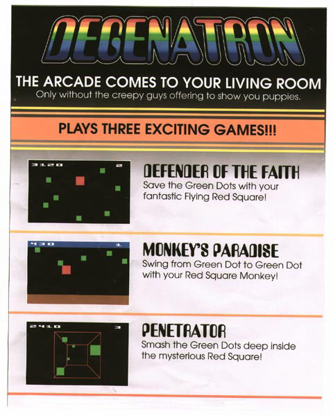

Nerd central this one. Squares with milk bottle glasses. But lots more fun than that crap they play today. Real games, you could play for hours on end until you were hallucinating and had burnt your retinas doing the same thing over and over again. Remember the Degenatron? I picked one of these up when it fell off the back of a lorry and I bloody loved it. My cousin now makes a fortune selling pirated PlayStation games down at Ramsgate Saturday market, so it's funny how things turn out, isn't it? Still, in case you were wondering, my cousin is a right wanker.
